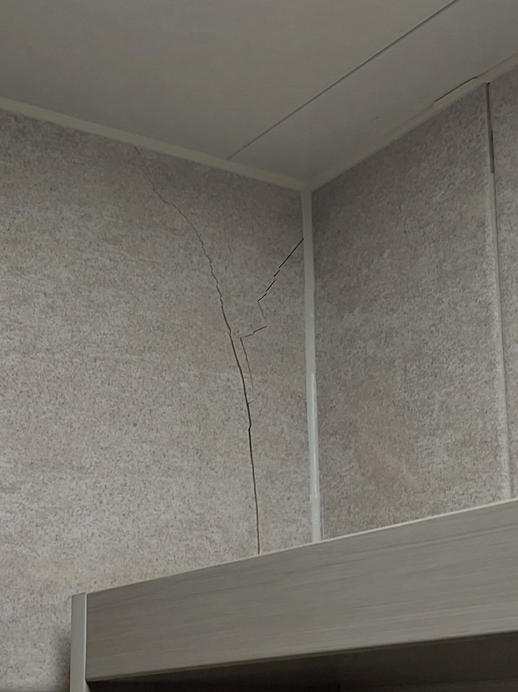
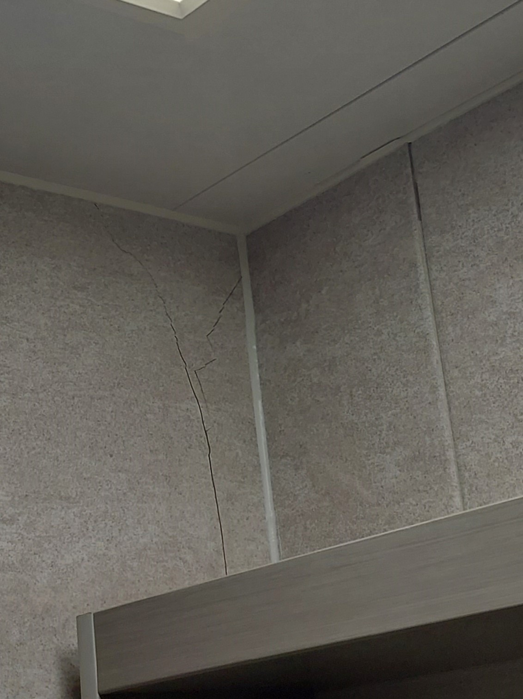
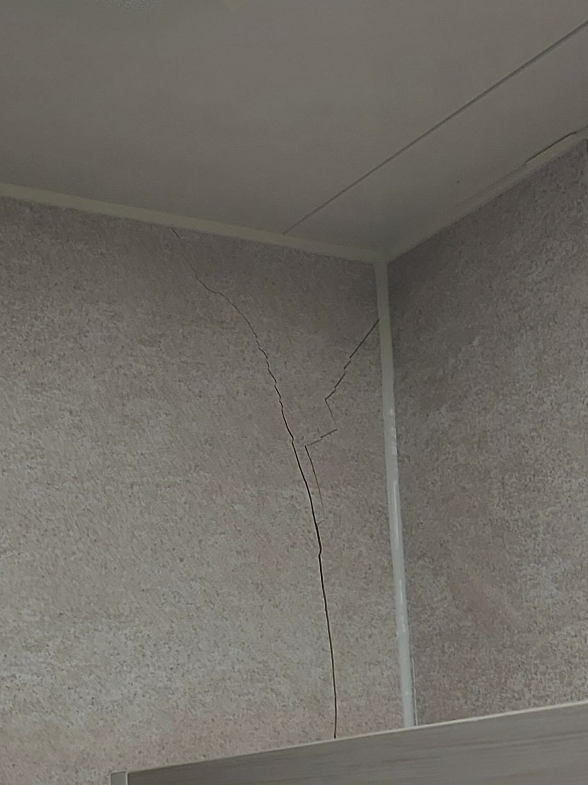
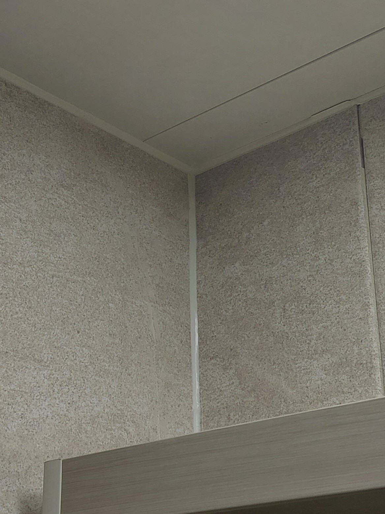
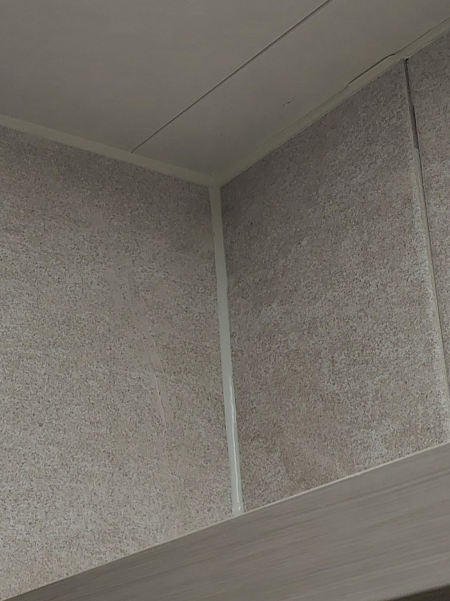
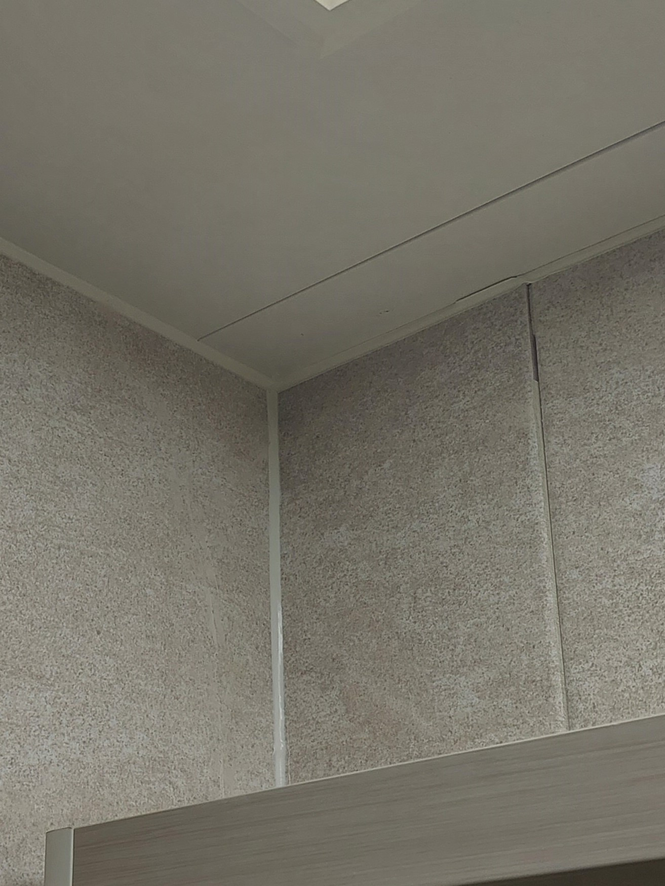

수원 호매실 한양수자인
욕실 타일크랙 복원 사례
전세로 거주 중인 욕실 벽타일에 크랙과 실금이 생기기 시작했고, 시간이 지나면서 균열 주변의 타일 표면 조각까지 떨어져 나오기 시작한 현장입니다. 향후 퇴거 시 욕실 타일 원상복구까지 고려해 타일크랙 복원 상담을 요청해주셨습니다.
복원 전 상태



타일 교체 대신 타일크랙 복원을 선택하는 이유
오래 사용한 아파트에서는 기존과 동일한 타일을 다시 구하기 어려운 경우가 많습니다. 비슷한 타일로 교체하면 기존 욕실 타일과 색상이나 무늬가 달라 교체한 부분이 오히려 눈에 띌 수 있습니다. 이런 경우 기존 타일을 살리는 타일크랙 복원을 선택할 수 있습니다.
욕실 타일크랙 복원 과정
세부 자재와 작업기법은 공개하지 않지만, 손상 상태를 확인한 뒤 내부 보강부터 표면과 패턴 복원까지 단계별로 진행합니다.
작업부위 보양
욕실 주변 시설과 작업 공간을 보호합니다.
탈락부 정리 및 청소
떨어진 타일 조각과 크랙 주변을 정돈합니다.
타일 내부 상태 확인
표면뿐 아니라 손상 부위 내부 상태를 확인합니다.
크랙 내부 보강
균열 내부를 보강하면서 기존 타일의 기본 색감을 함께 재현합니다.
크랙 메움·색상 재현
현장에서 실제 타일 색을 확인하며 주변과 어울리도록 색상을 맞춥니다.
표면 성형·평탄화
복원 부위의 높이와 표면을 기존 타일에 맞춰 정리합니다.
무늬·패턴 복원
특수자재를 이용해 기존 타일의 무늬와 패턴까지 표현합니다.
타일크랙 복원 후 모습
손상 부위를 정리한 뒤 기존 타일의 색감과 표면을 고려해 복원을 마무리했습니다.



타일크랙 복원 전·후 영상
“타일 복원하니까 소음도 없고, 먼지 걱정도 없어서 너무 편하다. 어디를 수리했는지 잘 모를 정도라서 너무 만족스러워요!”
타일크랙 복원이 가능한 경우와 교체가 필요한 경우
복원을 검토할 수 있는 경우
- 부분적인 타일 크랙
- 표면 이나감
- 작은 조각 탈락
- 동일 타일을 구하기 어려운 경우
교체를 검토해야 하는 경우
- 타일 단차가 심한 경우
- 큰 조각이 떨어져 나온 경우
- 메지 전체가 흔들리는 경우
- 타일 자체가 탈락한 경우
사진으로 복원 가능 여부를 먼저 확인하세요
아래 내용을 함께 보내주시면 보다 정확하게 상담할 수 있습니다.
타일크랙 복원 자주 묻는 질문
Q. 금이 간 타일은 무조건 교체해야 하나요?
손상 범위와 내부 상태에 따라 부분복원이 가능한 경우가 있습니다. 사진을 통해 먼저 상태를 확인하는 것이 좋습니다.
Q. 동일한 타일이 없어도 복원할 수 있나요?
교체와 달리 기존 타일을 그대로 살리는 방식이므로, 복원 가능한 손상이라면 동일 타일이 없어도 상담할 수 있습니다.
Q. 욕실 타일 복원은 얼마나 걸리나요?
손상 상태에 따라 달라지며, 이번 수원 호매실 현장은 약 1시간~1시간 30분 정도 소요됐습니다.
Q. 사진으로 복원 가능 여부를 먼저 알 수 있나요?
전체사진과 손상부위 근접사진, 크기, 지역을 보내주시면 우선적으로 복원 가능 여부를 상담해드립니다.